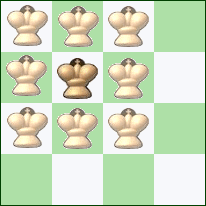
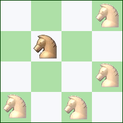
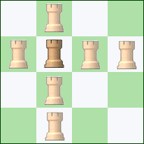
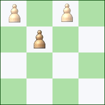

Solitaire Chess est un jeu d’énigmes logiques en solo basé sur le jeu d'échecs.
But du jeu
Dans Solitaire Chess, votre objectif est de capturer toutes les pièces d'échecs présentes sur le plateau afin de n'en laisser plus qu'une seule. Si il y a un roi en jeu, il devra être le dernier survivant. Mais pour cela, chaque déplacement effectué doit forcément aboutir à une prise de pièce ! Vous devrez donc prévoir à l'avance vos coups, afin de ne pas rester bloqué, et d'être contraint de recommencer !
Comment jouer ?
Solitaire Chess se compose de différents défis. Chaque défi consiste en un petit échiquier (dans notre cas, 4x4) sur lequel sont placées des pièces d'échecs. Les pièces présentes dans Solitaire Chess subissent les mêmes contraintes de déplacement que les pièces aux échecs. Toutes ces contraintes vous sont expliquées dans la partie Déplacements des pièces.
Gardez cependant à l'esprit que tout déplacement doit conduire à une prise de pièce !
Déplacements des pièces
Tout déplacement d'une pièce prend fin lorsque celle-ci prend une autre pièce.
Roi : Le roi ne peut se déplacer que d'une seule case, et ce dans toutes les directions.

Reine : La reine peut se déplacer dans toutes les directions, d'un nombre illimité de case.
Fou : Le fou peut se déplacer uniquement en diagonale, d'un nombre illimité de case.
Cavalier : Le cavalier se déplace en L : Après s'être déplacé de deux cases dans une direction, il pivote de 90° avant d'avancer à nouveau d'une case.

Tour : La tour peut se déplacer uniquement en ligne droite, d'un nombre illimité de case.

Pion : Le pion ne peur se déplacer que d'une seule case, seulement vers l'avant. La prise d'une pièce par un pion ne peut se faire qu'en diagonale. Contrairement aux échecs, la promotion des pions lorsqu'ils arrivent au bout du plateau n'a pas lieu dans le Solitaire Chess.
